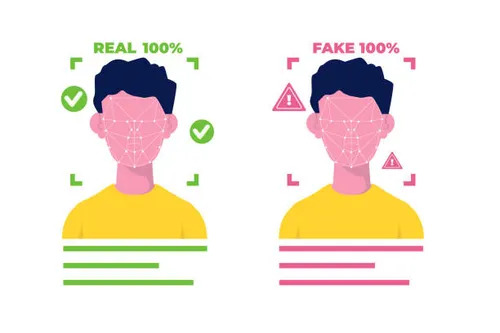

Our Members
Ewan Milligan
Andrew Boyd
Sean Reichert
Falah

Our Mission
We aim to give Museums and their employees the tools to identify the authenticity of their art. Helping to find fraudulent artwork such as fake celebrity photos, unauthorized art derivatives, etc. before it makes it into the museum. Preventing legal complications and giving the general populace a better experience.
Our aim
As deepfake experts, we train Art Authenticators in making the best decisions possible. Providing the history and knowledge of deepfakes to gain a better understanding when facing possible deepfakes. Training authenticators to determine if a piece of art is fake and what to do when a deepfake is submitted to a museum.
Agenda
- History
- This section will cover the history of deepfakes, how they are made, and why they are made in the first place.
- Dangers
- This section will cover the dangers of deepfakes, how they affect museums, and why we need to be wary of them.
- Avoidance
- This section will cover the methods to avoid deepfakes, how to spot the differences, and tools you can use to find them.
- Simulation
- This section will teach you how to detect deepfakes through a simulation.